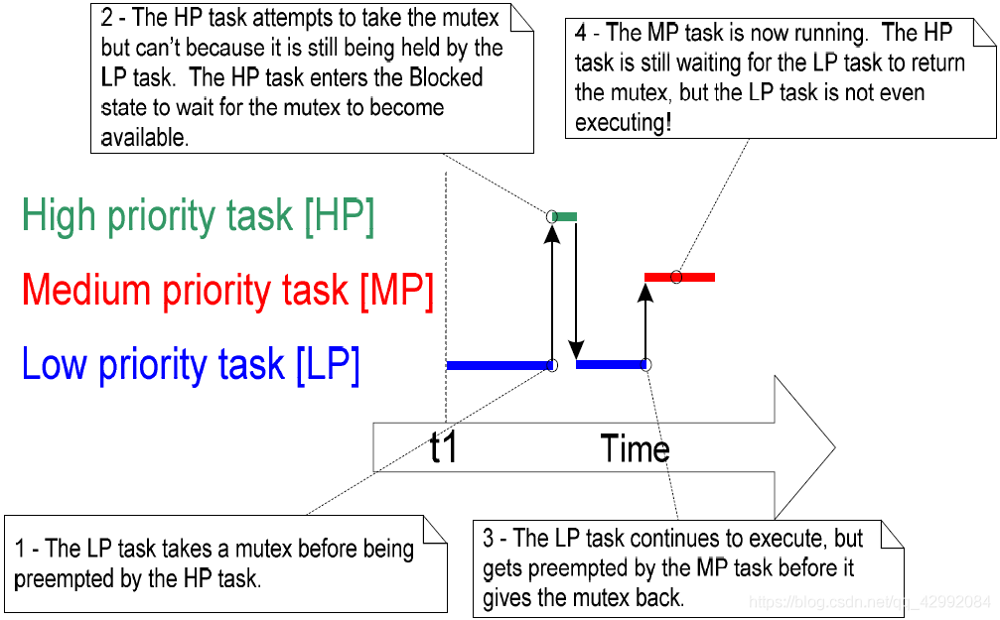
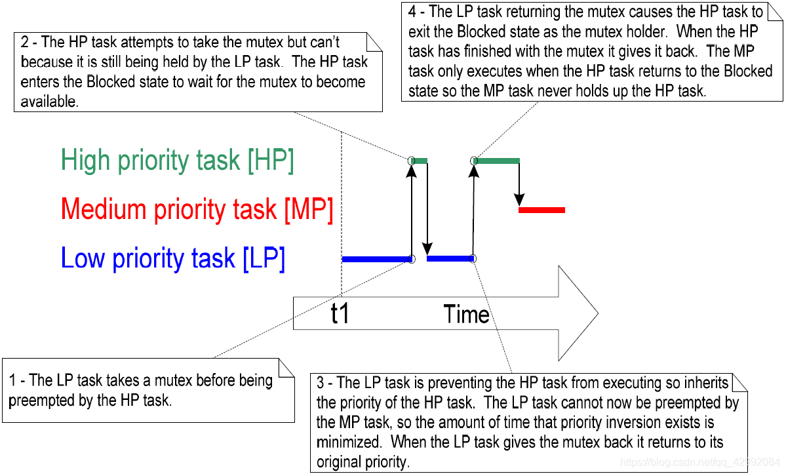

# 与二值量区别及应用
互斥量是一种特殊的二值信号量，用于控制在两个或多个任务间访问共享资源。
访问一个被多任务共享，或是被任务与中断共享的资源时，需要采用 “互斥” 技术以保证数据在任何时候都保持一致性。这样做的目的是要确保任务从开始访问资源就具有排它性，直至这个资源又恢复到完整状态。
在用于互斥的场合，互斥量从概念上可看作是与共享资源关联的令牌。一个任务想要合法地访问资源，其必须先成功地得到（Take）该资源对应的令牌（成为令牌持有者）。当令牌持有者完成资源使用，其最好马上归还（Give）令牌，因为只有归还了令牌，其它任务才可能成功持有，也才可能安全地访问该共享资源。一个任务除非持有了令牌，否则不允许访问共享资源。
它的特性场景：
这种机制纯粹是工作于应用程序作者制定的规则之下。任务不是在任何时候都可以访问资源是不需要理由的，因为这是所有任务达成的一致，除非它们能成为互斥量的持有者。
可以对比一下上一篇 FreeRTOS 篇章之二值信号量 的特性图。
虽然互斥量与二值信号量之间具有很多相同的特性，但两者间最大的区别在于信号量在被获得之后所发生的事情：
- 用于互斥的信号量需要归还。
- 用于同步的信号量通常是完成同步之后便丢弃，不用归还。
值得注意的是，互斥量不能在中断中使用：
- 互斥量的优先级继承属性意味着只能在任务间使用
- 中断在等待一个互斥量保护的资源的时候，不能阻塞
# 优先级反转
假设我们创建了两个任务，任务一跟任务二，任务二的优先级高于任务一的优先级，同时还创建了一个互斥量；当运行的时候，任务一获取了这个互斥量（成为令牌持有者），紧接着任务二也需要这个互斥量来共享资源（此时任务一并没有执行完成，释放互斥量），对于正常情况向下，高优先级任务的可以打断低优先任务，但是，由于互斥量的特性（只有归还了令牌，其它任务才可能成功持有，否则不允许访问共享资源，进入阻塞等待令牌归还），高优先级的任务二竟然必须等待低优先级的任务一放弃对互斥量的持有权。因此，高优先级任务被低优先级任务阻塞推迟的行为被称为 “优先级反转” 。
如果把这种行为再进一步放大，当高优先级任务正等待信号量的时候，一个介于两个任务优先之间的中等优先级任务开始执行 —— 这就会导致一个高优先级任务在等待一个低优先级任务，而低优先级任务却无法执行！
如下图：

# 优先级继承
FreeRTOS 中互斥量与二值信号量十分相似 —— 唯一的区别就是互斥量自动提供了一个基本的 ” 优先级继承” 机制。
优先级继承是最小化优先级反转负面影响的一种方案 —— 其并不能修正优先级反转带来的问题，仅仅是减小优先级反转的影响。优先级继承使得系统行为的数学分析更为复杂，所以如果可以避免的话，并不建议系统实现对优先级继承有所依赖。
优先级继承暂时地将互斥量持有者的优先级提升至所有等待此互斥量的任务所具有的最高优先级；持有互斥量的低优先级任务 “继承” 了等待互斥量的任务的优先级；互斥量持有者在归还互斥量时，优先级会自动设置为其原来的优先级。
优先级继承最小化优先级反转的影响：

# 死锁
死锁是利用互斥量提供互斥功能的另一个潜在缺陷。Deadlock 有时候会被更戏剧性地称为 “deadly embrace（抱死）”。
当两个任务都在等待被对方持有的资源时，两个任务都无法再继续执行，这种情况就被称为死锁。考虑如下情形，任务 A 与任务 B 都需要获得互斥量 X 与互斥量 Y 以完成各自的工作：
- 任务 A 执行，并成功获得了互斥量 X。
- 任务 A 被任务 B 抢占。
- 任务 B 成功获得了互斥量 Y，之后又试图获取互斥量 X —— 但互斥量 X 已经被任务 A 持有，所以对任务 B 无效。任务 B 选择进入阻塞态以等待互斥量 X 被释放。
- 任务 A 得以继续执行。其试图获取互斥量 Y —— 但互斥量 Y 已经被任务 B 持有而对任务 A 无效。任务 A 也选择进入阻塞态以等待互斥量 Y 被释放。
这种情形的最终结局是，任务 A 在等待一个被任务 B 持有的互斥量，而任务 B 也在等待一个被任务 A 持有的互斥量。死锁于是发生，因为两个任务都不可能再执行下去了。
和优先级反转一样，避免死锁的最好方法就是在设计阶段就考虑到这种潜在风险，这样设计出来的系统就不应该会出现死锁的情况。于实践经验而言，对于一个小型嵌入式系统，死锁并不是一个大问题，因为系统设计者对整个应用程序都非常清楚，所以能够找出发生死锁的代码区域，并消除死锁问题。
# API 函数
需要 #include "semphr.h"
| 功能 | API 接口 | 实际执行函数 | 其它 |
|---|---|---|---|
| 互斥量创建（动态） | xSemaphoreCreateMutex() | xQueueCreateMutex() | |
| 互斥量获取 | xSemaphoreTake() | xQueueGenericReceive() | |
| 互斥量释放 | xSemaphoreGive() | xQueueGenericSend() | |
| 互斥量创建（静态） | xSemaphoreCreateMutexStatic() | xQueueCreateMutexStatic() |
1、xSemaphoreCreateMutex () API 函数
SemaphoreHandle_t xSemaphoreCreateMutex( void ); |
返回参数：
- NULL：表示互斥量创建失败。原因是内存堆空间不足导致 FreeRTOS 无法为互斥量分配结构数据空间。
- 非 NULL：值表示互斥量创建成功。返回值应当保存起来作为该互斥量的句柄。
2、xSemaphoreTake () API 函数
BaseType_t xSemaphoreTake( SemaphoreHandle_t xSemaphore, | |
TickType_t xBlockTime ); |
传入参数：
- xSemaphore：获取得到的信号量。信号量由定义为 xSemaphoreHandle 类型的变量引用；信号量在使用前必须先创建
- xTicksToWait：阻塞超时时间。任务进入阻塞态以等待信号量有效的最长时间。如果
xTicksToWait为0，则xSemaphoreTake()在信号量无效时会立即返回；如果把xTicksToWait设置为portMAX_DELAY，那么阻塞等待将没有超时限制。
返回参数（有两个可能的返回值）：
- pdTRUE：成功获得信号量。
- pdFALSE：未能获得信号量。
3、xSemaphoreGive () API 函数
BaseType_t xSemaphoreGive( SemaphoreHandle_t xSemaphore ); |
传入参数：
- xSemaphore：给出的信号量。信号量由定义为
xSemaphoreHandle类型的变量引用；信号量在使用前必须先创建。
返回参数（有两个可能的返回值）：
- pdTRUE：信号量被释放。
- pdFALSE：信号量已经有效，无法给出。
4、xSemaphoreCreateMutexStatic () API 函数
SemaphoreHandle_t xSemaphoreCreateMutexStatic( StaticSemaphore_t *pxMutexBuffer ); |
该函数是用于在静态的时候，利用该函数创建一个互斥量的，具体可以去看他的注释，这里就不说了。
值得注意的是：当用 xSemaphoreCreateMutexStatic 创建一个静态互斥量后，该互斥量量是默认 “Give” 给出去了的，所以在 xSemaphoreCreateMutexStatic 创建后没有立即调用 xSemaphoreTake ，那么，它将通过你的第一次阻塞处理。
# 其他
这里就不放整个例程了，跟 FreeRTOS 篇章之队列管理 中差不多，只不过用互斥量来处理；像我们常用的多线程 printf 输出会出现乱码现象，可以如以下处理：
extern SemaphoreHandle_t MuxSem_UartPrintf; | |
#define USER_DEBUG 1 | |
#define DEBUG_PRINTF(fmt,arg...) do{\ | |
if(USER_DEBUG)\ | |
xSemaphoreTake(MuxSem_UartPrintf, portMAX_DELAY);\ | |
printf("<<-DEBUG INFO->> %s > "fmt"",__FUNCTION__, ##arg);\ | |
xSemaphoreGive(MuxSem_UartPrintf);\ | |
}while(0) |
然后，我们只需要在硬件初始化化的创建好互斥量，后面就可以用 DEBUG_PRINTF 宏来打印无乱码现象的数据输出了，而且还可以通过 USER_DEBUG 宏来选择时候显示调试信息。
前面也都说了，为了避免在 RTOS 中多个任务同时访问公用数据共享资源（或者同一硬件），因此，当有一个任务在访问处理共享资源时，其他的任务要停止对共享资源的访问，以避免出现数据访问（或处理）出错，所以可以用互斥量来处理这些问题；当然在使用互斥量的时候要注意上面所说的那一些缺陷。
最后，说一下递归互斥量：
递归互斥量（ Recursive Mutexes ）是互斥量的一个特例，与互斥量基本相同；除了：递归互斥量可以由拥有者多次获取，但是也要求拥有者释放相同次数。比如，一个递归互斥量被获取了 5 次，那么同样需要释放 5 次。